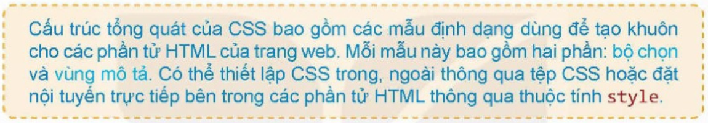

2. CẤU TRÚC CSS
Cấu trúc tổng quát của một mẫu định dạng CSS có hai phần:
bộ chọn (selector) và
vùng mô tả (declaration block). Vùng mô tả
bao gồm một hay nhiều quy định có dạng {
thuộc tính
:
giá trị;}, các quy định
được viết cách nhau bởi dấu “;”. Bộ chọn sẽ quy định những thẻ HTML nào
được chọn để áp dụng định dạng này.
Cấu trúc CSS có thể ở dạng đơn giản, trong đó vùng mô tả chỉ có một
quy định:
hoặc nhiều quy định ở vùng mô tả như sau:
Ví dụ: Mẫu CSS gồm hai quy định, thụt lề dòng đầu và chữ màu xanh áp
dụng cho bộ chọn là tất cả các thẻ p.
Có ba cách thiết lập CSS là
CSS trong (internal CSS),
CSS ngoài (external CSS) và
CSS nội tuyến (inline CSS).
a) Cách thiết lập CSS trong
Cách thiết lập này đưa toàn bộ các mẫu định dạng vào bên trong thẻ
<style> và đặt trong phần tử head của tệp
HTML. Với cách thiết lập này các định dạng sẽ áp dụng cho tất cả các
phần tử HTML của trang web phù hợp với mô tả bộ chọn của CSS. Với cách
thiết lập CSS trong, các mẫu định dạng CSS chỉ được áp dụng cho tệp HTML
hiện thời. Cách thiết lập CSS trong ví dụ ở
Hoạt động 1 là thiết lập CSS trong.
b) Cách thiết lập CSS ngoài
Các mẫu định dạng CSS được viết trong một tệp css, bên ngoài tệp
HTML. Tệp css này sẽ bao gồm các mẫu định dạng như đã mô tả ở trên, theo
ngôn ngữ CSS. Sau đó, cần thực hiện thao tác kết nối, liên kết tệp HTML
với tệp định dạng css.
Tệp style.css sau là ví dụ cách
thiết lập tệp css ngoài. Các dòng chú thích dưới dạng /*……*/ và có thể
trên nhiều dòng.
Cách kết nối tệp HTML với CSS như sau:
Cách 1: Sử dụng thẻ link đặt trong
vùng head của trang web, ví dụ:
Cách 2: Sử dụng lệnh
@import đặt trong phần tử style và nằm
trong phần tử head của trang web, ví dụ:
Một tệp CSS có thể được thiết lập để đồng thời áp dụng cho nhiều
trang web, giúp cho việc định dạng nhiều trang web thống nhất và khi cần
chỉnh sửa định dạng thì chỉ cần sửa một lần trong tệp định dạng css.
c) Cách thiết lập CSS nội tuyến
Có thể định dạng CSS trực tiếp bên trong thẻ của phần tử HTML bằng
cách chỉ ra các thuộc tính và giá trị cho thuộc tính style. Cách làm này
mất thời gian nhưng thời gian thực hiện sẽ nhanh. Các lợi ích khác của
cách thiết lập CSS nội tuyến sẽ được trình bày trong phần sau.

3. VAI TRÒ, Ý NGHĨA CỦA CSS
Nếu không dùng CSS thì khi định dạng nội dung trang web ta phải thực
hiện thông qua việc thiết lập các thuộc tính cho từng phần tử HTML. Nếu có
nhiều trang web và có nhiều phần tử HTML thì công việc này mất nhiều thời
gian và có thể không thống nhất. CSS ra đời để phục vụ việc định dạng nội
dung trang web một cách thống nhất, nhanh chóng và thuận tiện.
-
CSS sẽ giúp tách việc nhập nội dung trang web bằng thẻ HTML và việc
định dạng thành hai công việc độc lập với nhau. Điều này sẽ làm giảm
nhẹ công việc nhập nội dung, tăng tính chuyên nghiệp của việc định
dạng.
-
Các mẫu định dạng của CSS có thể được viết ngay trong phần head của
trang html, chỉ cần viết một lần và áp dụng cho tất cả các phần tử
trong bộ chọn. Như vậy, các định dạng này được thiết lập một lần và
được dùng nhiều lần.
-
Các mẫu định dạng có thể viết trong tệp CSS ngoài và kết nối vào bất
kỳ trang web nào. Tính năng này cho phép định dạng một lần và áp dụng
cho nhiều trang web, thậm chí cả một website. Một ý nghĩa khác là nếu
một website (hay trang web) cần thay đổi định dạng thì có thể chỉ cần
chỉnh sửa một lần.